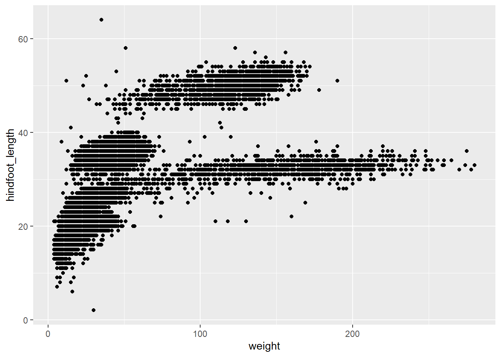
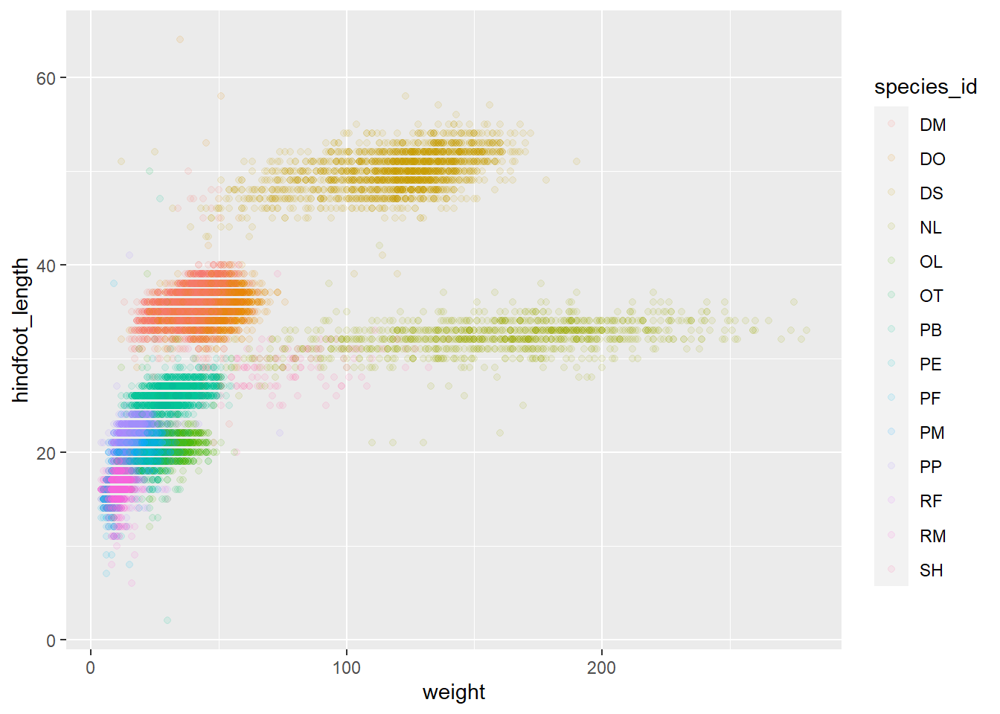
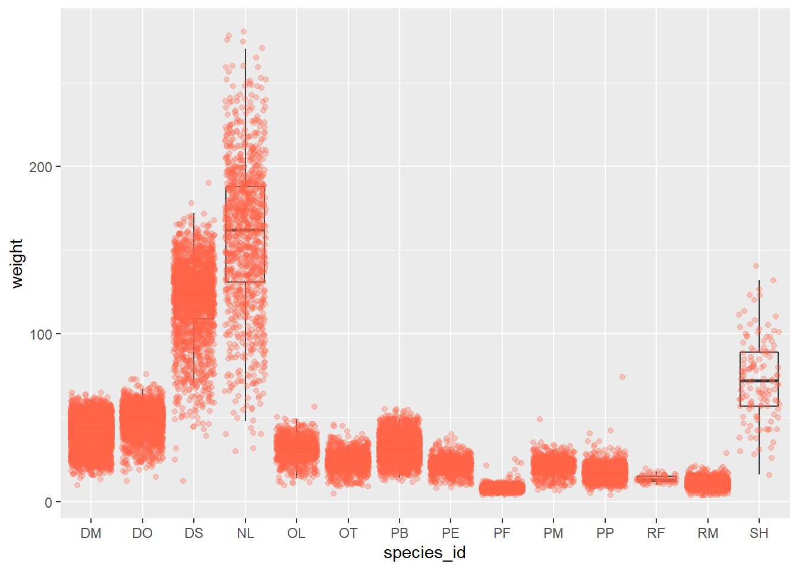
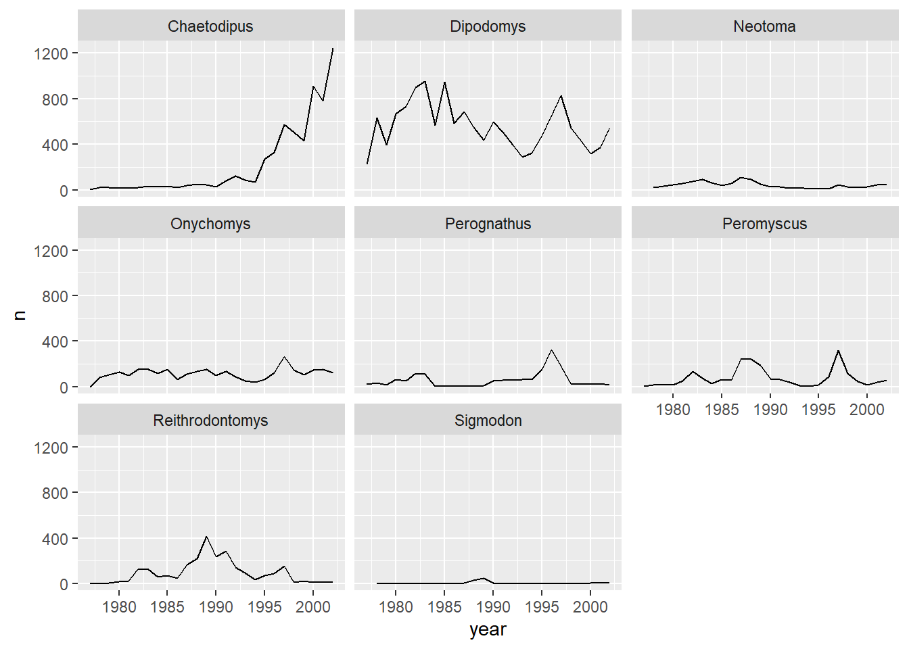
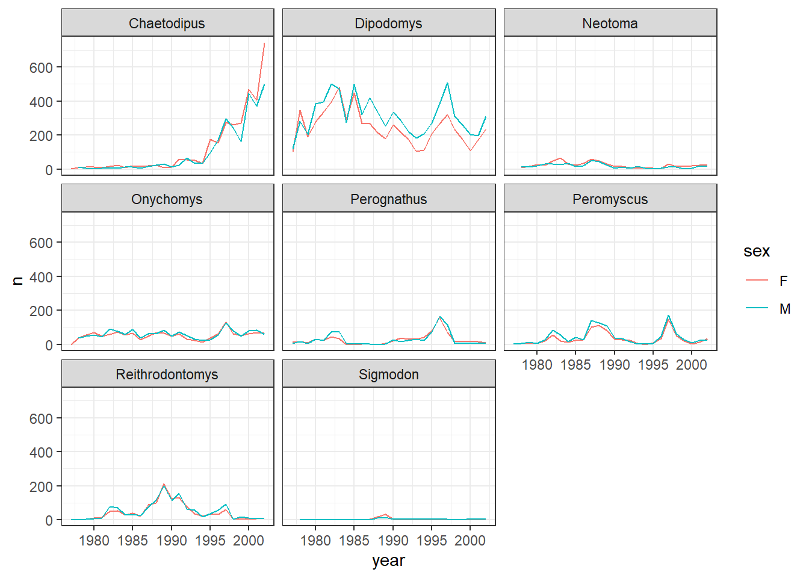
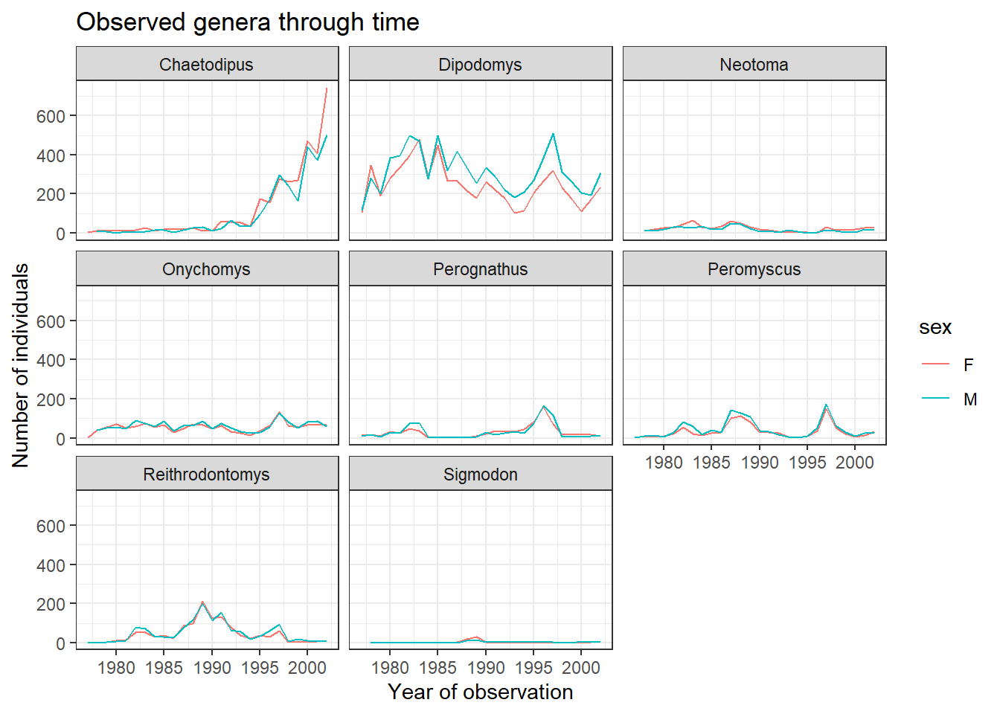
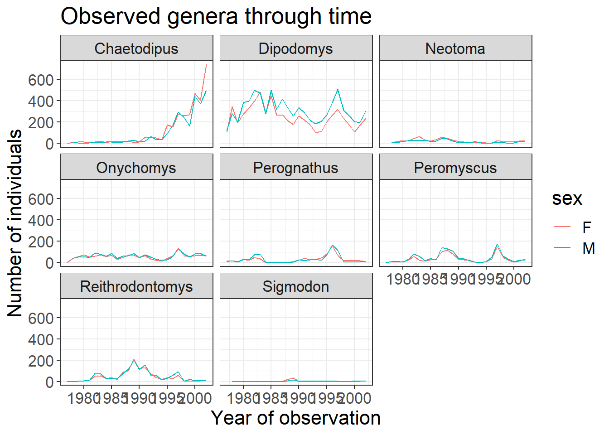
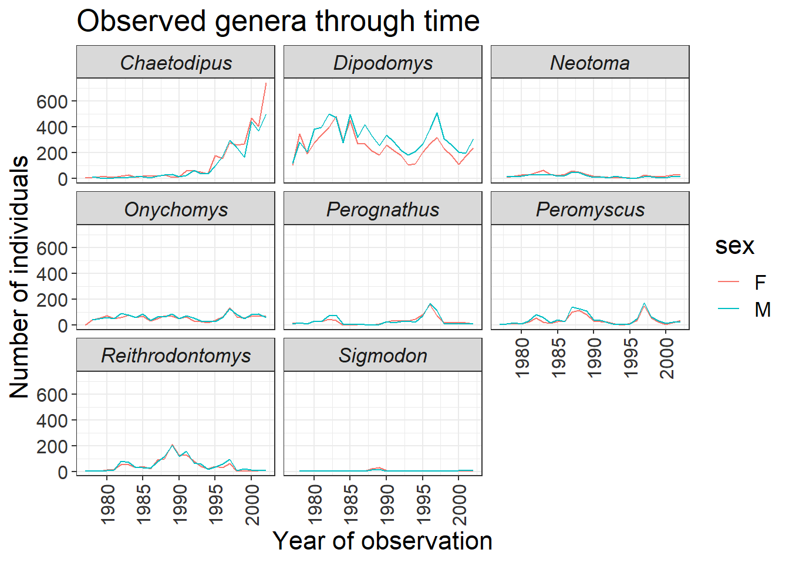
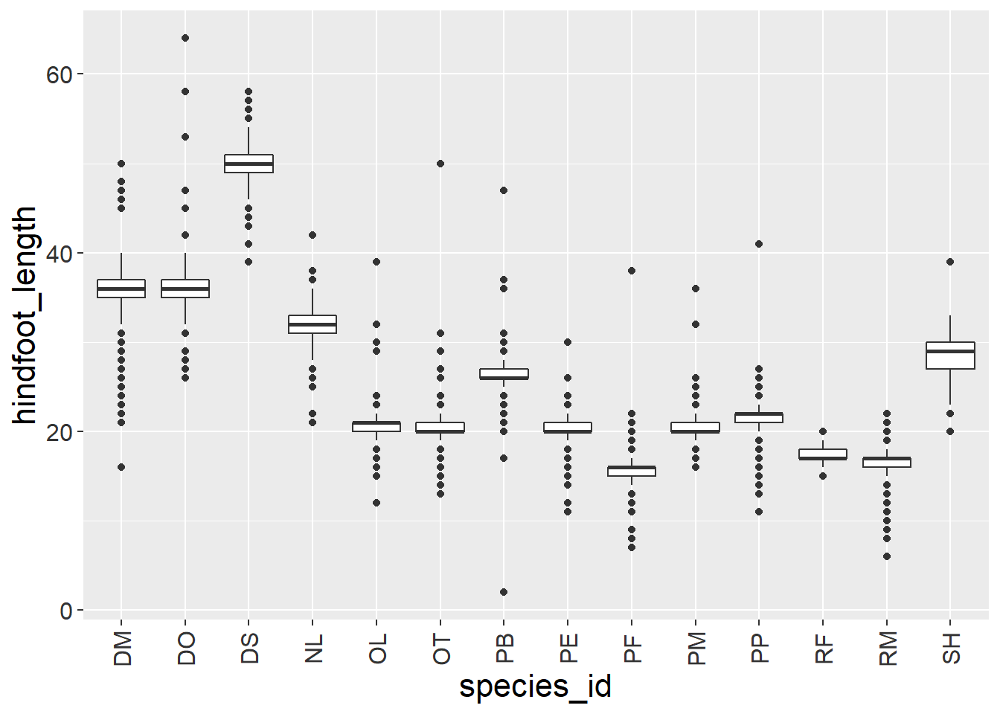

Data visualization with ggplot2
Learning Objectives
- Produce scatter plots, boxplots, and time series plots using ggplot.
- Set universal plot settings.
- Describe what faceting is and apply faceting in ggplot.
- Modify the aesthetics of an existing ggplot plot (including axis labels and color).
- Build complex and customized plots from data in a data frame.
We start by loading the required packages. ggplot2 is included in the tidyverse package.
If not still in the workspace, load the data we saved in the previous lesson.
surveys_complete <- read_csv("data/surveys_complete.csv")Plotting with ggplot2
ggplot2 is a plotting package that provides helpful commands to create complex plots from data in a data frame. It provides a more programmatic interface for specifying what variables to plot, how they are displayed, and general visual properties. Therefore, we only need minimal changes if the underlying data change or if we decide to change from a bar plot to a scatterplot. This helps in creating publication quality plots with minimal amounts of adjustments and tweaking.
ggplot2 refers to the name of the package itself. When using the package we use the function ggplot() to generate the plots, and so references to using the function will be referred to as ggplot() and the package as a whole as ggplot2
ggplot2 plots work best with data in the ‘long’ format, i.e., a column for every variable, and a row for every observation. Well-structured data will save you lots of time when making figures with ggplot2
ggplot graphics are built layer by layer by adding new elements. Adding layers in this fashion allows for extensive flexibility and customization of plots.
To build a ggplot, we will use the following basic template that can be used for different types of plots:
ggplot(data = <DATA>, mapping = aes(<MAPPINGS>)) + <GEOM_FUNCTION>()- use the
ggplot()function and bind the plot to a specific data frame using thedataargument
ggplot(data = surveys_complete)- define an aesthetic mapping (using the aesthetic (
aes) function), by selecting the variables to be plotted and specifying how to present them in the graph, e.g., as x/y positions or characteristics such as size, shape, color, etc.
-
add ‘geoms’ – graphical representations of the data in the plot (points, lines, bars).
ggplot2offers many different geoms; we will use some common ones today, including:-
geom_point()for scatter plots, dot plots, etc. -
geom_boxplot()for, well, boxplots! -
geom_line()for trend lines, time series, etc.
-
To add a geom to the plot use + operator. Because we have two continuous variables, let’s use geom_point() first:
ggplot(data = surveys_complete, aes(x = weight, y = hindfoot_length)) +
geom_point()
The + in the ggplot2 package is particularly useful because it allows you to modify existing ggplot objects. This means you can easily set up plot “templates” and conveniently explore different types of plots, so the above plot can also be generated with code like this:
# Assign plot to a variable
surveys_plot <- ggplot(data = surveys_complete,
mapping = aes(x = weight, y = hindfoot_length))
# Draw the plot
surveys_plot +
geom_point()Notes
- Anything you put in the
ggplot()function can be seen by any geom layers that you add (i.e., these are universal plot settings). This includes the x- and y-axis you set up inaes(). - You can also specify aesthetics for a given geom independently of the aesthetics defined globally in the
ggplot()function. - The
+sign used to add layers must be placed at the end of each line containing a layer. If, instead, the+sign is added in the line before the other layer,ggplot2will not add the new layer and will return an error message. - You may notice that we sometimes reference ‘ggplot2’ and sometimes ‘ggplot’. To clarify, ‘ggplot2’ is the name of the most recent version of the package. However, any time we call the function itself, it’s just called ‘ggplot’.
- The previous version of the
ggplot2package, calledggplot, which also contained theggplot()function is now unsupported and has been removed from CRAN in order to reduce accidental installations and further confusion.
# This is the correct syntax for adding layers
surveys_plot +
geom_point()
# This will not add the new layer and will return an error message
surveys_plot
+ geom_point()Challenge (optional)
Scatter plots can be useful exploratory tools for small datasets. For data sets with large numbers of observations, such as the
surveys_completedata set, overplotting of points can be a limitation of scatter plots. One strategy for handling such settings is to use hexagonal binning of observations. The plot space is tessellated into hexagons. Each hexagon is assigned a color based on the number of observations that fall within its boundaries. To use hexagonal binning withggplot2, first install the R packagehexbinfrom CRAN:install.packages("hexbin") library(hexbin)Then use the
geom_hex()function:surveys_plot + geom_hex()
- What are the relative strengths and weaknesses of a hexagonal bin plot compared to a scatter plot? Examine the above scatter plot and compare it with the hexagonal bin plot that you created.
Building your plots iteratively
Building plots with ggplot2 is typically an iterative process. We start by defining the dataset we’ll use, lay out the axes, and choose a geom:
ggplot(data = surveys_complete, aes(x = weight, y = hindfoot_length)) +
geom_point()
Then, we start modifying this plot to extract more information from it. For instance, we can add transparency (alpha) to avoid overplotting:
ggplot(data = surveys_complete, aes(x = weight, y = hindfoot_length)) +
geom_point(alpha = 0.1)We can also add colors for all the points:
ggplot(data = surveys_complete, mapping = aes(x = weight, y = hindfoot_length)) +
geom_point(alpha = 0.1, color = "blue")Or to color each species in the plot differently, you could use a vector as an input to the argument color. ggplot2 will provide a different color corresponding to different values in the vector. Here is an example where we color with species_id:
ggplot(data = surveys_complete, mapping = aes(x = weight, y = hindfoot_length)) +
geom_point(alpha = 0.1, aes(color = species_id))
Challenge
Use what you just learned to create a scatter plot of
weightoverspecies_idwith the plot types showing in different colors. Is this a good way to show this type of data?Answer
ggplot(data = surveys_complete, mapping = aes(x = species_id, y = weight)) + geom_point(aes(color = plot_type))
Boxplot
We can use boxplots to visualize the distribution of weight within each species:
ggplot(data = surveys_complete, mapping = aes(x = species_id, y = weight)) +
geom_boxplot()By adding points to the boxplot, we can have a better idea of the number of measurements and of their distribution:
ggplot(data = surveys_complete, mapping = aes(x = species_id, y = weight)) +
geom_boxplot(alpha = 0) +
geom_jitter(alpha = 0.3, color = "tomato")
Notice how the boxplot layer is behind the jitter layer? What do you need to change in the code to put the boxplot in front of the points such that it’s not hidden?
Challenges
Boxplots are useful summaries, but hide the shape of the distribution. For example, if there is a bimodal distribution, it would not be observed with a boxplot. An alternative to the boxplot is the violin plot (sometimes known as a beanplot), where the shape (of the density of points) is drawn.
- Replace the box plot with a violin plot; see
geom_violin().In many types of data, it is important to consider the scale of the observations. For example, it may be worth changing the scale of the axis to better distribute the observations in the space of the plot. Changing the scale of the axes is done similarly to adding/modifying other components (i.e., by incrementally adding commands). Try making these modifications:
- Represent weight on the log10 scale; see
scale_y_log10().So far, we’ve looked at the distribution of weight within species. Try making a new plot to explore the distribution of another variable within each species.
Create boxplot for
hindfoot_length. Overlay the boxplot layer on a jitter layer to show actual measurements.Add color to the data points on your boxplot according to the plot from which the sample was taken (
plot_id).
Hint: Check the class for
plot_id. Consider changing the class ofplot_idfrom integer to factor. Why does this change how R makes the graph?
Plotting time series data
Let’s calculate number of counts per year for each genus. First we need to group the data and count records within each group:
Timelapse data can be visualized as a line plot with years on the x-axis and counts on the y-axis:
Unfortunately, this does not work because we plotted data for all the genera together. We need to tell ggplot to draw a line for each genus by modifying the aesthetic function to include group = genus:
We will be able to distinguish genera in the plot if we add colors (using color also automatically groups the data):

Integrating the pipe operator with ggplot2
In the previous lesson, we saw how to use the pipe operator %>% to use different functions in a sequence and create a coherent workflow. We can also use the pipe operator to pass the data argument to the ggplot() function. The hard part is to remember that to build your ggplot, you need to use + and not %>%.
The pipe operator can also be used to link data manipulation with consequent data visualization.

Faceting
ggplot has a special technique called faceting that allows the user to split one plot into multiple plots based on a factor included in the dataset. We will use it to make a time series plot for each genus:
ggplot(data = yearly_counts, aes(x = year, y = n)) +
geom_line() +
facet_wrap(facets = vars(genus))
Now we would like to split the line in each plot by the sex of each individual measured. To do that we need to make counts in the data frame grouped by year, genus, and sex:
We can now make the faceted plot by splitting further by sex using color (within a single plot):
ggplot(data = yearly_sex_counts, mapping = aes(x = year, y = n, color = sex)) +
geom_line() +
facet_wrap(facets = vars(genus))
We can also facet both by sex and genus:
ggplot(data = yearly_sex_counts,
mapping = aes(x = year, y = n, color = sex)) +
geom_line() +
facet_grid(rows = vars(sex), cols = vars(genus))You can also organise the panels only by rows (or only by columns):
# One column, facet by rows
ggplot(data = yearly_sex_counts,
mapping = aes(x = year, y = n, color = sex)) +
geom_line() +
facet_grid(rows = vars(genus))# One row, facet by column
ggplot(data = yearly_sex_counts,
mapping = aes(x = year, y = n, color = sex)) +
geom_line() +
facet_grid(cols = vars(genus))Note: ggplot2 before version 3.0.0 used formulas to specify how plots are faceted. If you encounter facet_grid/wrap(...) code containing ~, please read https://ggplot2.tidyverse.org/news/#tidy-evaluation.
ggplot2 themes
Usually plots with white background look more readable when printed. Every single component of a ggplot graph can be customized using the generic theme() function, as we will see below. However, there are pre-loaded themes available that change the overall appearance of the graph without much effort.
For example, we can change our previous graph to have a simpler white background using the theme_bw() function:
ggplot(data = yearly_sex_counts,
mapping = aes(x = year, y = n, color = sex)) +
geom_line() +
facet_wrap(vars(genus)) +
theme_bw()
In addition to theme_bw(), which changes the plot background to white, ggplot2 comes with several other themes which can be useful to quickly change the look of your visualization. The complete list of themes is available at https://ggplot2.tidyverse.org/reference/ggtheme.html. theme_minimal() and theme_light() are popular, and theme_void() can be useful as a starting point to create a new hand-crafted theme.
The ggthemes package provides a wide variety of options.
Challenge
Use what you just learned to create a plot that depicts how the average weight of each species changes through the years.
Answer
yearly_weight <- surveys_complete %>% group_by(year, species_id) %>% summarize(avg_weight = mean(weight))#> `summarise()` has grouped output by 'year'. You can override using the #> `.groups` argument.ggplot(data = yearly_weight, mapping = aes(x=year, y=avg_weight)) + geom_line() + facet_wrap(vars(species_id)) + theme_bw()
Customization
Take a look at the ggplot2 cheat sheet, and think of ways you could improve the plot.
Now, let’s change names of axes to something more informative than ‘year’ and ‘n’ and add a title to the figure:
ggplot(data = yearly_sex_counts, aes(x = year, y = n, color = sex)) +
geom_line() +
facet_wrap(vars(genus)) +
labs(title = "Observed genera through time",
x = "Year of observation",
y = "Number of individuals") +
theme_bw()
The axes have more informative names, but their readability can be improved by increasing the font size. This can be done with the generic theme() function:
ggplot(data = yearly_sex_counts, mapping = aes(x = year, y = n, color = sex)) +
geom_line() +
facet_wrap(vars(genus)) +
labs(title = "Observed genera through time",
x = "Year of observation",
y = "Number of individuals") +
theme_bw() +
theme(text=element_text(size = 16))
Note that it is also possible to change the fonts of your plots. If you are on Windows, you may have to install the extrafont package, and follow the instructions included in the README for this package.
After our manipulations, you may notice that the values on the x-axis are still not properly readable. Let’s change the orientation of the labels and adjust them vertically and horizontally so they don’t overlap. You can use a 90 degree angle, or experiment to find the appropriate angle for diagonally oriented labels. We can also modify the facet label text (strip.text) to italicize the genus names:
ggplot(data = yearly_sex_counts, mapping = aes(x = year, y = n, color = sex)) +
geom_line() +
facet_wrap(vars(genus)) +
labs(title = "Observed genera through time",
x = "Year of observation",
y = "Number of individuals") +
theme_bw() +
theme(axis.text.x = element_text(colour = "grey20", size = 12, angle = 90, hjust = 0.5, vjust = 0.5),
axis.text.y = element_text(colour = "grey20", size = 12),
strip.text = element_text(face = "italic"),
text = element_text(size = 16))
If you like the changes you created better than the default theme, you can save them as an object to be able to easily apply them to other plots you may create:
grey_theme <- theme(axis.text.x = element_text(colour="grey20", size = 12,
angle = 90, hjust = 0.5,
vjust = 0.5),
axis.text.y = element_text(colour = "grey20", size = 12),
text=element_text(size = 16))
ggplot(surveys_complete, aes(x = species_id, y = hindfoot_length)) +
geom_boxplot() +
grey_theme
Challenge
With all of this information in hand, please take another five minutes to either improve one of the plots generated in this exercise or create a beautiful graph of your own. Use the RStudio
ggplot2cheat sheet for inspiration.Here are some ideas:
- See if you can change the thickness of the lines.
- Can you find a way to change the name of the legend? What about its labels?
- Try using a different color palette (see https://www.cookbook-r.com/Graphs/Colors_(ggplot2)/).
Arranging plots
Faceting is a great tool for splitting one plot into multiple plots, but sometimes you may want to produce a single figure that contains multiple plots using different variables or even different data frames. The patchwork package allows us to combine separate ggplots into a single figure while keeping everything aligned properly. Like most R packages, we can install patchwork from CRAN, the R package repository:
install.packages("patchwork")After you have loaded the patchwork package you can use + to place plots next to each other, / to arrange them vertically, and plot_layout() to determine how much space each plot uses:
library(patchwork)
plot_weight <- ggplot(data = surveys_complete, aes(x = species_id, y = weight)) +
geom_boxplot() +
labs(x = "Species", y = expression(log[10](Weight))) +
scale_y_log10()
plot_count <- ggplot(data = yearly_counts, aes(x = year, y = n, color = genus)) +
geom_line() +
labs(x = "Year", y = "Abundance")
plot_weight / plot_count + plot_layout(heights = c(3, 2))You can also use parentheses () to create more complex layouts. There are many useful examples on the patchwork website
Exporting plots
After creating your plot, you can save it to a file in your favorite format. The Export tab in the Plot pane in RStudio will save your plots at low resolution, which will not be accepted by many journals and will not scale well for posters. The ggplot2 extensions website provides a list of packages that extend the capabilities of ggplot2, including additional themes.
Instead, use the ggsave() function, which allows you to easily change the dimension and resolution of your plot by adjusting the appropriate arguments (width, height and dpi):
my_plot <- ggplot(data = yearly_sex_counts,
aes(x = year, y = n, color = sex)) +
geom_line() +
facet_wrap(vars(genus)) +
labs(title = "Observed genera through time",
x = "Year of observation",
y = "Number of individuals") +
theme_bw() +
theme(axis.text.x = element_text(colour = "grey20", size = 12, angle = 90,
hjust = 0.5, vjust = 0.5),
axis.text.y = element_text(colour = "grey20", size = 12),
text = element_text(size = 16))
ggsave("name_of_file.png", my_plot, width = 15, height = 10)
## This also works for plots combined with patchwork
plot_combined <- plot_weight / plot_count + plot_layout(heights = c(3, 2))
ggsave("plot_combined.png", plot_combined, width = 10, dpi = 300)Note: The parameters width and height also determine the font size in the saved plot.
Page built on: 📆 2022-06-28 ‒ 🕢 17:23:19